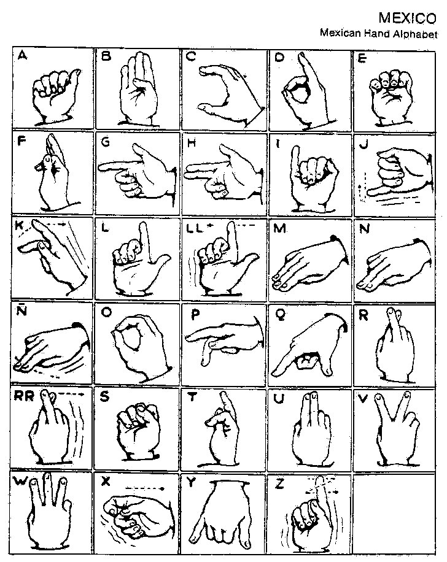

That was a portal not to another level, but to a quite another kind of game.
This world is much more fun if you see it as a game. And here's a secret level of how religion can be approached. I think my other unrelated fields feel this train as the last one to their own kind of immortality before I erase them, so this can be the most surprising book you could ever read. At least I register it as one of my goals.
Fingerspelling level begins.
Here I will only collect as many as possible, to use it when needed. Just an album of exhibits,
which seems to actually lead to a whole new field of alphabetic research with lots of fruit I can see already.





The End of the secret level.